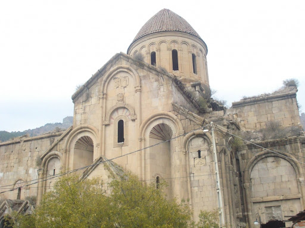

ბიოგრაფია
გრიგოლ ხანძთელი იყო საქართველოს მართლმადიდებელი ეკლესიის ერთ-ერთი უდიდესი მოღვაწე. ის დაიბადა 759 წელს და მნიშვნელოვანი როლი ითამაშა ქართული მონასტრული ცხოვრების განვითარებაში.
მოღვაწეობა
გრიგოლ ხანძთელმა დააარსა მრავალი მონასტერი და ხელი შეუწყო ქრისტიანული კულტურის გავრცელებას. მისი მოღვაწეობა საქართველოს სულიერებისა და კულტურის ისტორიაში განსაკუთრებულად აღინიშნება.
გალერეა
იხილეთ მუზეუმის ფოტომასალა:


კონტაქტი
მუზეუმის მისამართი: თბილისი, აღმაშენებლის გამზირი 123
ტელეფონი: +995 555 777 888
ელ.ფოსტა: info.geo@gmail.com